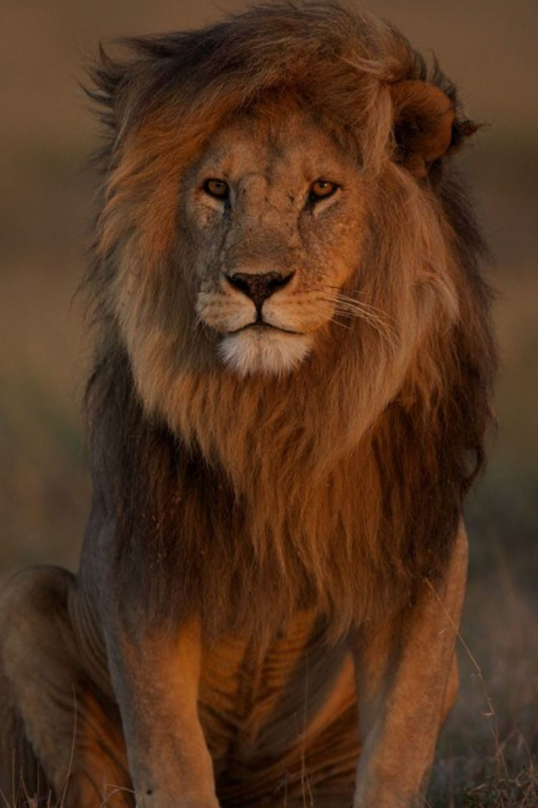

León
Características principales:
- Los leones son grandes felinos que habitan en las regiones de África y Asia.
- Tienen una melena distintiva que solo los machos poseen.
- Son conocidos por su ferocidad y su papel como el rey de la selva.
Lista de presas favoritas:
- Cebra
- Ñu
- Antílope
Hábitat:
Los leones viven principalmente en las praderas y sabanas africanas.
- Angola.
Benin.
Botswana.
Burkina Faso.
Camerún.
República Centroafricana.
Chad.
República Democrática del Congo.
Ejemplo de lista anidada:
- Características físicas:
- Peso promedio: entre 150 y 250 kg.
- Longitud promedio del cuerpo: alrededor de 2,5 metros.
- Comportamiento:
- Los leones son animales sociales y viven en grupos organizados.
- La caza en grupo es una característica destacada de su comportamiento.
